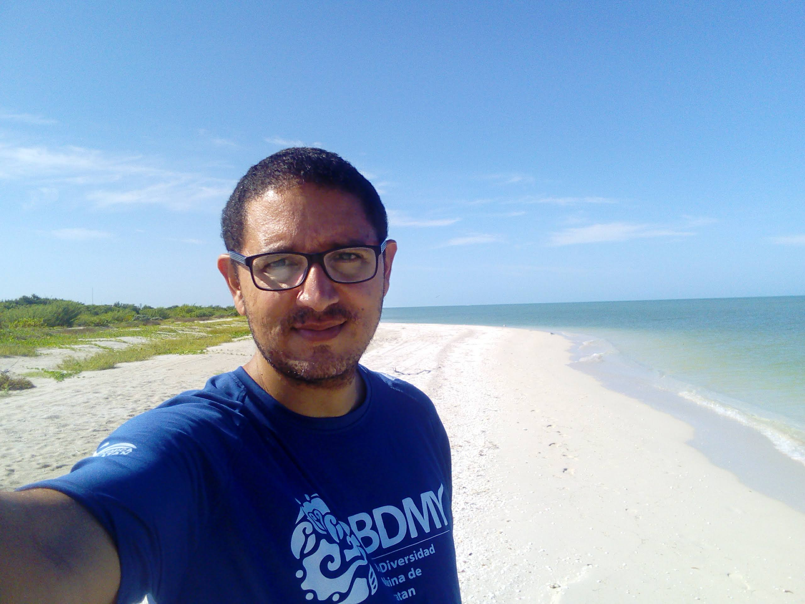
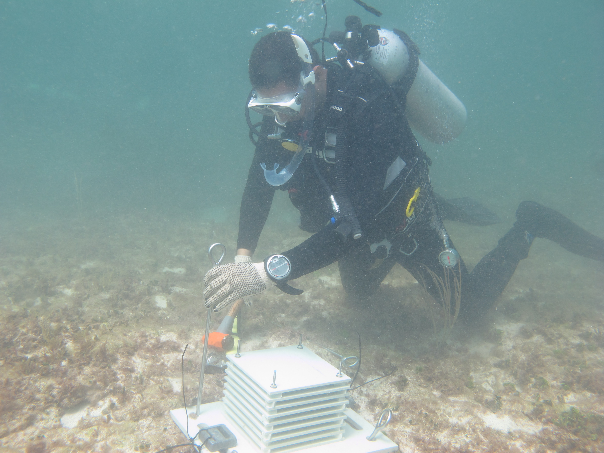
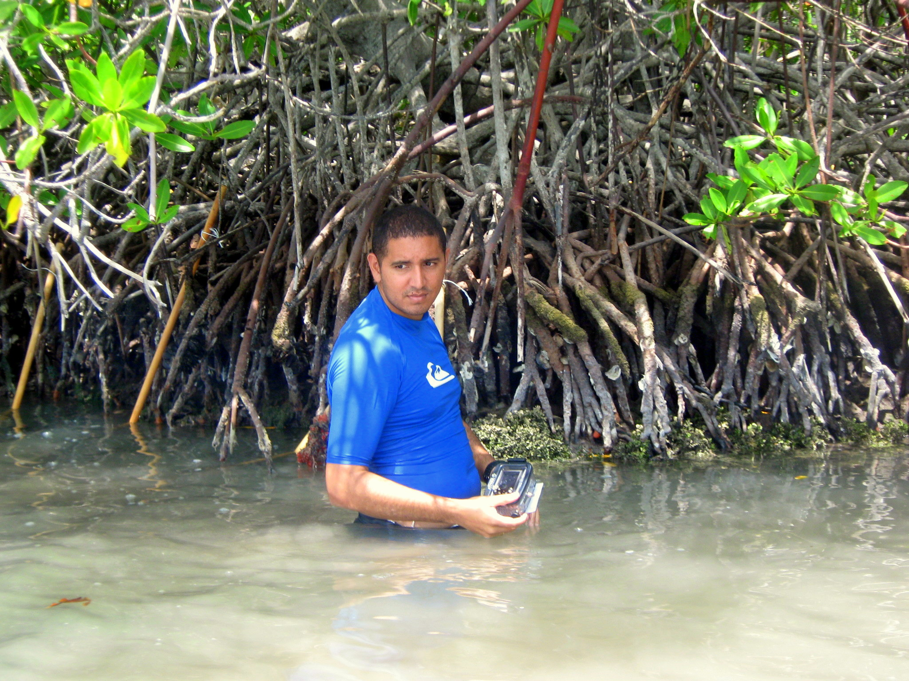
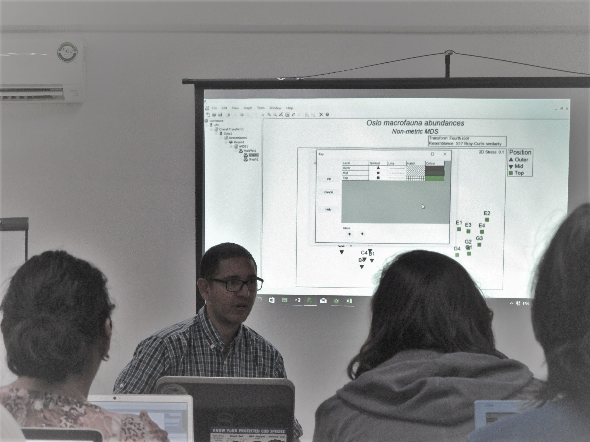
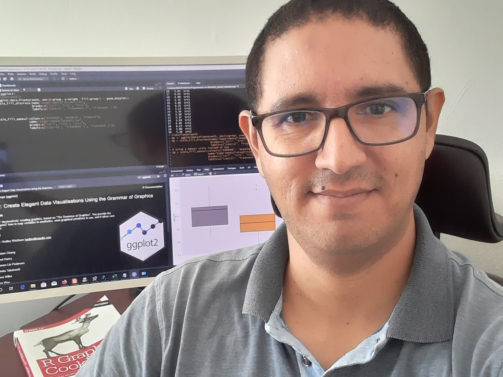

Edlin J. Guerra Castro
Marine Ecology | Numerical Ecology | Statistics & Data Science





Biography
My research interests focus on quantitative community ecology, specifically, the description of patterns of species diversity of marine-coastal ecosystems at different spatial scales (from local to continental) and identifying processes responsible for those patterns using correlative analysis and manipulative experiments. My work uses and applies advanced statistical methods to evaluate ecological hypotheses. I am also interested in designing and evaluating statistical methods for better ecological studies. These experiences have opened the doors for several international collaborations, including my current academic affiliation at the National Autonomous University of Mexico and being a workshops presenter for the New Zealand company PRIMER-e. In addition, it allowed me to co-found the Mexican company BS-STATS for statistical services analyses applied to biological and environmental sciences.
Academic profiles
Details about my education, scientific articles, projects, and peer reviews can be accessed through the following platforms:
We can also interact on the following academic/social networks:
Software development
Main author and responsible for the R package: Simulated Sampling Procedure for Community Ecology (SSP) and the online SSP web app.
Designer and programmer responsible for the Shiny app BCG for coral reefs of Puerto Rico and the U.S. Virgin Islands. Service for ICCR, financed by US EPA and NOAA.